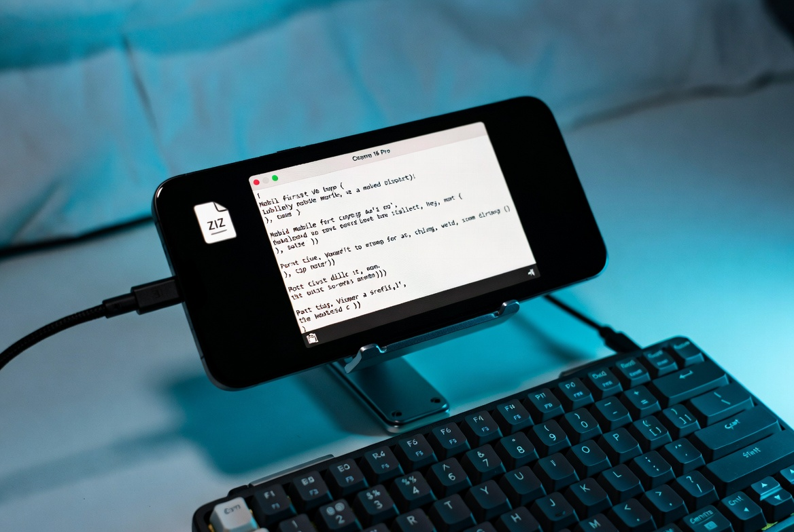
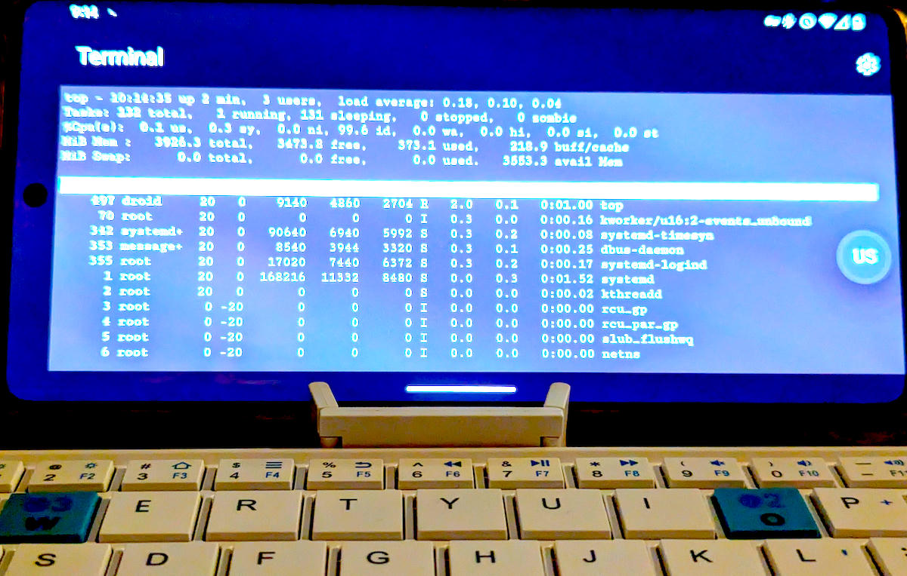

Most conversations about “cultural differences” in the workplace stay at the surface. Someone is different. Someone notices. Then the conversation becomes about the difference itself. People spend time talking about how they are not the same instead of finding the places where the work is the same and simply doing it.
I have watched this pattern for years. The wish that people would quit complaining and just do their job is not cynicism. It is the observation that attention is finite. Every minute spent rehearsing difference is a minute not spent on the thing that actually moves the needle.
So when the conversation turns to differences, the more useful answer is not another list of identities or styles. It is a concrete description of how the work actually gets done when friction is treated as the primary enemy.
What is different about how I work
The process is simple once you see it. Grok hands me a zip file. I plug a keyboard into the iPhone 16. I open ISH. I unzip. Then I work inside TCSH with programmable completion and the hub command-line tool. Almost everything stays in lowercase so the default iPhone keyboard never forces a mode shift for shift or symbols.
That last detail matters more than it sounds. Every time the keyboard has to change mode, attention is broken. Every time a file name requires an uppercase letter or a special character that is not on the primary layer, a tiny tax is paid. Those taxes accumulate. Over a day they become the difference between finishing and stopping.
The goal is not cleverness. The goal is the removal of every unnecessary step between the idea and the committed change. No laptop. No context switch to a heavier machine. No hunting for a power outlet or a larger screen when the phone and a keyboard already solve the problem.

Why public keys stay out of the picture
Almost every AI agent and every corporate tool wants a public key. The stated reason is security. The practical result is that the agent is given the ability to touch source that the human would rather keep under tighter control. The paranoia is understandable. The solution is simpler: design the workflow so the key is never required in the first place.
Zip files travel in one direction. Commands stay local. The phone is the machine. The agent is a collaborator that returns artifacts, not a process that needs persistent credentials. That boundary is deliberate. It is one more form of friction that does not have to exist.
The office exchange that actually works
Imagine you are standing in the office talking to someone. What do they mostly want to hear? Mostly nothing. They are thinking about whatever they are thinking about. You are thinking about whatever you are thinking about. The useful moments are the brief exchanges of valuable ideas. Everything else is noise that both people are politely enduring.
The same principle applies to tools and process. Most of the ceremony around development environments is noise. The valuable part is the idea that becomes a working change with the least possible ceremony. When the ceremony is reduced to plugging in a keyboard and typing lowercase commands that the shell completes for you, the exchange stays close to the idea itself.

The difference that is worth talking about
Cultural differences exist. They are real. Talking about them at length rarely improves the work. What does improve the work is the decision to treat friction as the primary variable. Every keystroke that requires a mode change, every tool that demands a key it does not need, every machine that must be carried when a phone already suffices, is a tax on attention.
The workflow described here is one concrete answer to that tax. It is not presented as superior ideology. It is presented as a set of choices that keep the distance between intention and result as short as possible. That is the difference worth exchanging.
When people in an office stop rehearsing how they are different and start exchanging the next useful idea, the work moves. The same is true of the tools. Remove the friction. Keep the exchange. Do the job.